SciPy-数值计算库
SciPy函数库在NumPy库的基础上增加了众多的数学、科学以及工程计算中常用的库函数。例如线性代数、常微分方程数值求解、信号处理、图像处理、稀疏矩阵等等。由于其涉及的领域众多、本书没有能力对其一一的进行介绍。作为入门介绍，让我们看看如何用SciPy进行插值处理、信号滤波以及用C语言加速计算。
最小二乘拟合
假设有一组实验数据(x[i], y[i])，我们知道它们之间的函数关系:y = f(x)，通过这些已知信息，需要确定函数中的一些参数项。例如，如果f是一个线型函数f(x) = kx+b，那么参数k和b就是我们需要确定的值。如果将这些参数用 p 表示的话，那么我们就是要找到一组 *p 值使得如下公式中的S函数最小：
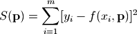
这种算法被称之为最小二乘拟合(Least-square fitting)。
scipy中的子函数库optimize已经提供了实现最小二乘拟合算法的函数leastsq。下面是用leastsq进行数据拟合的一个例子：
# -*- coding: utf-8 -*-
import numpy as np
from scipy.optimize import leastsq
import pylab as pl
def func(x, p):
"""
数据拟合所用的函数: A*sin(2*pi*k*x + theta)
"""
A, k, theta = p
return A*np.sin(2*np.pi*k*x+theta)
def residuals(p, y, x):
"""
实验数据x, y和拟合函数之间的差，p为拟合需要找到的系数
"""
return y - func(x, p)
x = np.linspace(0, -2*np.pi, 100)
A, k, theta = 10, 0.34, np.pi/6 # 真实数据的函数参数
y0 = func(x, [A, k, theta]) # 真实数据
y1 = y0 + 2 * np.random.randn(len(x)) # 加入噪声之后的实验数据
p0 = [7, 0.2, 0] # 第一次猜测的函数拟合参数
# 调用leastsq进行数据拟合
# residuals为计算误差的函数
# p0为拟合参数的初始值
# args为需要拟合的实验数据
plsq = leastsq(residuals, p0, args=(y1, x))
print u"真实参数:", [A, k, theta]
print u"拟合参数", plsq[0] # 实验数据拟合后的参数
pl.plot(x, y0, label=u"真实数据")
pl.plot(x, y1, label=u"带噪声的实验数据")
pl.plot(x, func(x, plsq[0]), label=u"拟合数据")
pl.legend()
pl.show()
这个例子中我们要拟合的函数是一个正弦波函数，它有三个参数 A, k, theta ，分别对应振幅、频率、相角。假设我们的实验数据是一组包含噪声的数据 x, y1，其中y1是在真实数据y0的基础上加入噪声的到了。
通过leastsq函数对带噪声的实验数据x, y1进行数据拟合，可以找到x和真实数据y0之间的正弦关系的三个参数： A, k, theta。下面是程序的输出：
# -*- coding: utf-8 -*-
# 本程序用各种fmin函数求卷积的逆运算
import scipy.optimize as opt
import numpy as np
def test_fmin_convolve(fminfunc, x, h, y, yn, x0):
"""
x (*) h = y, (*)表示卷积
yn为在y的基础上添加一些干扰噪声的结果
x0为求解x的初始值
"""
def convolve_func(h):
"""
计算 yn - x (*) h 的power
fmin将通过计算使得此power最小
"""
return np.sum((yn - np.convolve(x, h))**2)
# 调用fmin函数，以x0为初始值
h0 = fminfunc(convolve_func, x0)
print fminfunc.__name__
print "---------------------"
# 输出 x (*) h0 和 y 之间的相对误差
print "error of y:", np.sum((np.convolve(x, h0)-y)**2)/np.sum(y**2)
# 输出 h0 和 h 之间的相对误差
print "error of h:", np.sum((h0-h)**2)/np.sum(h**2)
print
def test_n(m, n, nscale):
"""
随机产生x, h, y, yn, x0等数列，调用各种fmin函数求解b
m为x的长度, n为h的长度, nscale为干扰的强度
"""
x = np.random.rand(m)
h = np.random.rand(n)
y = np.convolve(x, h)
yn = y + np.random.rand(len(y)) * nscale
x0 = np.random.rand(n)
test_fmin_convolve(opt.fmin, x, h, y, yn, x0)
test_fmin_convolve(opt.fmin_powell, x, h, y, yn, x0)
test_fmin_convolve(opt.fmin_cg, x, h, y, yn, x0)
test_fmin_convolve(opt.fmin_bfgs, x, h, y, yn, x0)
if __name__ == "__main__":
test_n(200, 20, 0.1)
下面是程序的输出：
fmin
ーーーーーーーーーーー
error of y: 0.00568756699607
error of h: 0.354083287918
fmin_powell
ーーーーーーーーーーー
error of y: 0.000116114709857
error of h: 0.000258897894009
fmin_cg
ーーーーーーーーーーー
error of y: 0.000111220299615
error of h: 0.000211404733439
fmin_bfgs
ーーーーーーーーーーー
error of y: 0.000111220251551
error of h: 0.000211405138529
非线性方程组求解
optimize库中的fsolve函数可以用来对非线性方程组进行求解。它的基本调用形式如下：
fsolve(func, x0)
func(x)是计算方程组误差的函数，它的参数x是一个矢量，表示方程组的各个未知数的一组可能解，func返回将x代入方程组之后得到的误差；x0为未知数矢量的初始值。如果要对如下方程组进行求解的话：
- f1(u1,u2,u3) = 0
- f2(u1,u2,u3) = 0
- f3(u1,u2,u3) = 0
那么func可以如下定义：
def func(x):
u1,u2,u3 = x
return [f1(u1,u2,u3), f2(u1,u2,u3), f3(u1,u2,u3)]
下面是一个实际的例子，求解如下方程组的解：
- 5*x1 + 3 = 0
- 4x0x0 - 2sin(x1x2) = 0
- x1*x2 - 1.5 = 0
程序如下：
from scipy.optimize import fsolve
from math import sin,cos
def f(x):
x0 = float(x[0])
x1 = float(x[1])
x2 = float(x[2])
return [
5*x1+3,
4*x0*x0 - 2*sin(x1*x2),
x1*x2 - 1.5
]
result = fsolve(f, [1,1,1])
print result
print f(result)
输出为：
[-0.70622057 -0.6 -2.5 ]
[0.0, -9.1260332624187868e-14, 5.3290705182007514e-15]
由于fsolve函数在调用函数f时，传递的参数为数组，因此如果直接使用数组中的元素计算的话，计算速度将会有所降低，因此这里先用float函数将数组中的元素转换为Python中的标准浮点数，然后调用标准math库中的函数进行运算。
在对方程组进行求解时，fsolve会自动计算方程组的雅可比矩阵，如果方程组中的未知数很多，而与每个方程有关的未知数较少时，即雅可比矩阵比较稀疏时，传递一个计算雅可比矩阵的函数将能大幅度提高运算速度。笔者在一个模拟计算的程序中需要大量求解近有50个未知数的非线性方程组的解。每个方程平均与6个未知数相关，通过传递雅可比矩阵的计算函数使计算速度提高了4倍。
雅可比矩阵
雅可比矩阵是一阶偏导数以一定方式排列的矩阵，它给出了可微分方程与给定点的最优线性逼近，因此类似于多元函数的导数。例如前面的函数f1,f2,f3和未知数u1,u2,u3的雅可比矩阵如下：
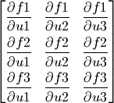
使用雅可比矩阵的fsolve实例如下，计算雅可比矩阵的函数j通过fprime参数传递给fsolve，函数j和函数f一样，有一个未知数的解矢量参数x，函数j计算非线性方程组在矢量x点上的雅可比矩阵。由于这个例子中未知数很少，因此程序计算雅可比矩阵并不能带来计算速度的提升。
# -*- coding: utf-8 -*-
from scipy.optimize import fsolve
from math import sin,cos
def f(x):
x0 = float(x[0])
x1 = float(x[1])
x2 = float(x[2])
return [
5*x1+3,
4*x0*x0 - 2*sin(x1*x2),
x1*x2 - 1.5
]
def j(x):
x0 = float(x[0])
x1 = float(x[1])
x2 = float(x[2])
return [
[0, 5, 0],
[8*x0, -2*x2*cos(x1*x2), -2*x1*cos(x1*x2)],
[0, x2, x1]
]
result = fsolve(f, [1,1,1], fprime=j)
print result
print f(result)
B-Spline样条曲线
interpolate库提供了许多对数据进行插值运算的函数。下面是使用直线和B-Spline对正弦波上的点进行插值的例子。
# -*- coding: utf-8 -*-
import numpy as np
import pylab as pl
from scipy import interpolate
x = np.linspace(0, 2*np.pi+np.pi/4, 10)
y = np.sin(x)
x_new = np.linspace(0, 2*np.pi+np.pi/4, 100)
f_linear = interpolate.interp1d(x, y)
tck = interpolate.splrep(x, y)
y_bspline = interpolate.splev(x_new, tck)
pl.plot(x, y, "o", label=u"原始数据")
pl.plot(x_new, f_linear(x_new), label=u"线性插值")
pl.plot(x_new, y_bspline, label=u"B-spline插值")
pl.legend()
pl.show()
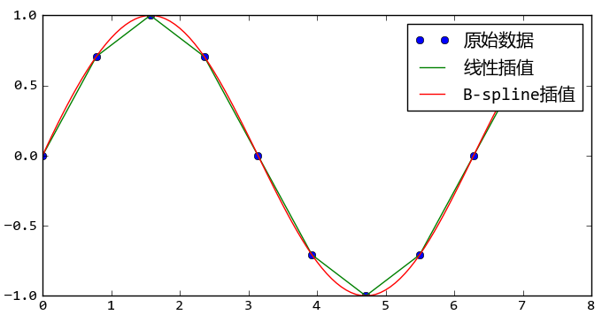
使用interpolate库对正弦波数据进行线性插值和B-Spline插值
在这段程序中，通过interp1d函数直接得到一个新的线性插值函数。而B-Spline插值运算需要先使用splrep函数计算出B-Spline曲线的参数，然后将参数传递给splev函数计算出各个取样点的插值结果。
数值积分
数值积分是对定积分的数值求解，例如可以利用数值积分计算某个形状的面积。下面让我们来考虑一下如何计算半径为1的半圆的面积，根据圆的面积公式，其面积应该等于PI/2。单位半圆曲线可以用下面的函数表示：
def half_circle(x):
return (1-x**2)**0.5
下面的程序使用经典的分小矩形计算面积总和的方式，计算出单位半圆的面积：
>>> N = 10000
>>> x = np.linspace(-1, 1, N)
>>> dx = 2.0/N
>>> y = half_circle(x)
>>> dx * np.sum(y[:-1] + y[1:]) # 面积的两倍
3.1412751679988937
利用上述方式计算出的圆上一系列点的坐标，还可以用numpy.trapz进行数值积分：
>>> import numpy as np
>>> np.trapz(y, x) * 2 # 面积的两倍
3.1415893269316042
此函数计算的是以x,y为顶点坐标的折线与X轴所夹的面积。同样的分割点数，trapz函数的结果更加接近精确值一些。
如果我们调用scipy.integrate库中的quad函数的话，将会得到非常精确的结果：
>>> from scipy import integrate
>>> pi_half, err = integrate.quad(half_circle, -1, 1)
>>> pi_half*2
3.1415926535897984
多重定积分的求值可以通过多次调用quad函数实现，为了调用方便，integrate库提供了dblquad函数进行二重定积分，tplquad函数进行三重定积分。下面以计算单位半球体积为例说明dblquad函数的用法。
单位半球上的点(x,y,z)符合如下方程：
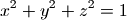
因此可以如下定义通过(x,y)坐标计算球面上点的z值的函数：
def half_sphere(x, y):
return (1-x**2-y**2)**0.5
X-Y轴平面与此球体的交线为一个单位圆，因此积分区间为此单位圆，可以考虑为X轴坐标从-1到1进行积分，而Y轴从 -half_circle(x) 到 half_circle(x) 进行积分，于是可以调用dblquad函数：
>>> integrate.dblquad(half_sphere, -1, 1,
lambda x:-half_circle(x),
lambda x:half_circle(x))
>>> (2.0943951023931988, 2.3252456653390915e-14)
>>> np.pi*4/3/2 # 通过球体体积公式计算的半球体积
2.0943951023931953
dblquad函数的调用方式为：
dblquad(func2d, a, b, gfun, hfun)
对于func2d(x,y)函数进行二重积分，其中a,b为变量x的积分区间，而gfun(x)到hfun(x)为变量y的积分区间。
半球体积的积分的示意图如下：
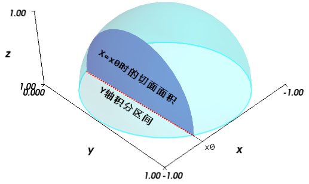
半球体积的双重定积分示意图
X轴的积分区间为-1.0到1.0，对于X=x0时，通过对Y轴的积分计算出切面的面积，因此Y轴的积分区间如图中红色点线所示。
解常微分方程组
scipy.integrate库提供了数值积分和常微分方程组求解算法odeint。下面让我们来看看如何用odeint计算洛仑兹吸引子的轨迹。洛仑兹吸引子由下面的三个微分方程定义：
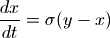
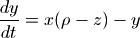
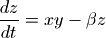
洛仑兹吸引子的详细介绍: http://bzhang.lamost.org/website/archives/lorenz_attactor
这三个方程定义了三维空间中各个坐标点上的速度矢量。从某个坐标开始沿着速度矢量进行积分，就可以计算出无质量点在此空间中的运动轨迹。其中 , ,  为三个常数，不同的参数可以计算出不同的运动轨迹： x(t), y(t), z(t)。 当参数为某些值时，轨迹出现馄饨现象：即微小的初值差别也会显著地影响运动轨迹。下面是洛仑兹吸引子的轨迹计算和绘制程序：
为三个常数，不同的参数可以计算出不同的运动轨迹： x(t), y(t), z(t)。 当参数为某些值时，轨迹出现馄饨现象：即微小的初值差别也会显著地影响运动轨迹。下面是洛仑兹吸引子的轨迹计算和绘制程序：
# -*- coding: utf-8 -*-
from scipy.integrate import odeint
import numpy as np
def lorenz(w, t, p, r, b):
# 给出位置矢量w，和三个参数p, r, b计算出
# dx/dt, dy/dt, dz/dt的值
x, y, z = w
# 直接与lorenz的计算公式对应
return np.array([p*(y-x), x*(r-z)-y, x*y-b*z])
t = np.arange(0, 30, 0.01) # 创建时间点
# 调用ode对lorenz进行求解, 用两个不同的初始值
track1 = odeint(lorenz, (0.0, 1.00, 0.0), t, args=(10.0, 28.0, 3.0))
track2 = odeint(lorenz, (0.0, 1.01, 0.0), t, args=(10.0, 28.0, 3.0))
# 绘图
from mpl_toolkits.mplot3d import Axes3D
import matplotlib.pyplot as plt
fig = plt.figure()
ax = Axes3D(fig)
ax.plot(track1[:,0], track1[:,1], track1[:,2])
ax.plot(track2[:,0], track2[:,1], track2[:,2])
plt.show()
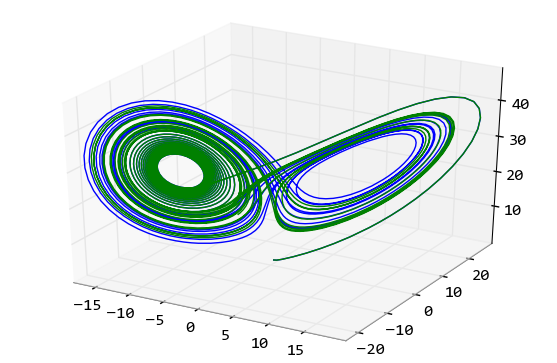
用odeint函数对洛仑兹吸引子微分方程进行数值求解所得到的运动轨迹
我们看到即使初始值只相差0.01，两条运动轨迹也是完全不同的。
在程序中先定义一个lorenz函数，它的任务是计算出某个位置的各个方向的微分值，这个计算直接根据洛仑兹吸引子的公式得出。然后调用odeint，对微分方程求解，odeint有许多参数，这里用到的四个参数分别为：
- lorenz， 它是计算某个位移上的各个方向的速度(位移的微分)
- (0.0, 1.0, 0.0)，位移初始值。计算常微分方程所需的各个变量的初始值
- t， 表示时间的数组，odeint对于此数组中的每个时间点进行求解，得出所有时间点的位置
- args， 这些参数直接传递给lorenz函数，因此它们都是常量
滤波器设计
scipy.signal库提供了许多信号处理方面的函数。在这一节，让我们来看看如何利用signal库设计滤波器，查看滤波器的频率响应，以及如何使用滤波器对信号进行滤波。
假设如下导入signal库:
>>> import scipy.signal as signal
下面的程序设计一个带通IIR滤波器：
>>> b, a = signal.iirdesign([0.2, 0.5], [0.1, 0.6], 2, 40)
这个滤波器的通带为0.2f0到0.5f0，阻带为小于0.1f0和大于0.6f0，其中f0为1/2的信号取样频率，如果取样频率为8kHz的话，那么这个带通滤波器的通带为800Hz到2kHz。通带的最大增益衰减为2dB，阻带的最小增益衰减为40dB，即通带的增益浮动在2dB之内，阻带至少有40dB的衰减。
iirdesgin返回的两个数组b和a， 它们分别是IIR滤波器的分子和分母部分的系数。其中a[0]恒等于1。
下面通过调用freqz计算所得到的滤波器的频率响应：
>>> w, h = signal.freqz(b, a)
freqz返回两个数组w和h，其中w是圆频率数组，通过w/pi*f0可以计算出其对应的实际频率。h是w中的对应频率点的响应，它是一个复数数组，其幅值为滤波器的增益，相角为滤波器的相位特性。
下面计算h的增益特性，并转换为dB度量。由于h中存在幅值几乎为0的值，因此先用clip函数对其裁剪之后，再调用对数函数，避免计算出错。
>>> power = 20*np.log10(np.clip(np.abs(h), 1e-8, 1e100))
通过下面的语句可以绘制出滤波器的增益特性图，这里假设取样频率为8kHz：
>>> pl.plot(w/np.pi*4000, power)
在实际运用中为了测量未知系统的频率特性，经常将频率扫描波输入到系统中，观察系统的输出，从而计算其频率特性。下面让我们来模拟这一过程。
为了调用chirp函数以产生频率扫描波形的数据，首先需要产生一个等差数组代表取样时间，下面的语句产生2秒钟取样频率为8kHz的取样时间数组：
>>> t = np.arange(0, 2, 1/8000.0)
然后调用chirp得到2秒钟的频率扫描波形的数据：
>>> sweep = signal.chirp(t, f0=0, t1 = 2, f1=4000.0)
频率扫描波的开始频率f0为0Hz，结束频率f1为4kHz，到达4kHz的时间为2秒，使用数组t作为取样时间点。
下面通过调用lfilter函数计算sweep波形经过带通滤波器之后的结果：
>>> out = signal.lfilter(b, a, sweep)
lfilter内部通过如下算式计算IIR滤波器的输出：
通过如下算式可以计算输入为x时的滤波器的输出，其中数组x代表输入信号，y代表输出信号：
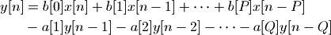
为了和系统的增益特性图进行比较，需要获取输出波形的包络，因此下面先将输出波形数据转换为能量值：
>>> out = 20*np.log10(np.abs(out))
为了计算包络，找到所有能量大于前后两个取样点(局部最大点)的下标：
>>> index = np.where(np.logical_and(out[1:-1] > out[:-2], out[1:-1] > out[2:]))[0] + 1
最后将时间转换为对应的频率，绘制所有局部最大点的能量值：
>>> pl.plot(t[index]/2.0*4000, out[index] )
下图显示freqz计算的频谱和频率扫描波得到的频率特性，我们看到其结果是一致的。
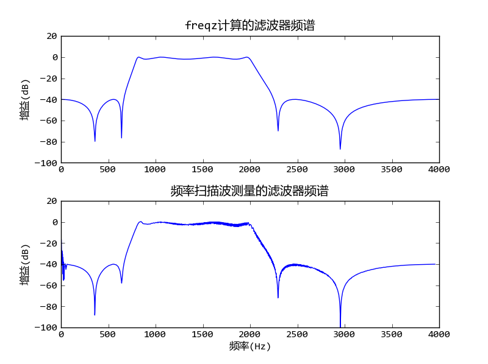
带通IIR滤波器的频率响应和频率扫描波计算的结果比较
计算此图的完整源程序请查看附录中的 带通滤波器设计 。
用Weave嵌入C语言
Python作为动态语言其功能虽然强大，但是在数值计算方面有一个最大的缺点：速度不够快。在Python级别的循环和计算的速度只有C语言程序的百分之一。因此才有了NumPy, SciPy这样的函数库，将高度优化的C、Fortran的函数库进行包装，以供Python程序调用。如果这些高度优化的函数库无法实现我们的算法，必须从头开始写循环、计算的话，那么用Python来做显然是不合适的。因此SciPy提供了快速调用C++语言程序的方法-- Weave。下面是对NumPy的数组求和的例子：
# -*- coding: utf-8 -*-
import scipy.weave as weave
import numpy as np
import time
def my_sum(a):
n=int(len(a))
code="""
int i;
double counter;
counter =0;
for(i=0;i<n;i++){
counter=counter+a(i);
}
return_val=counter;
"""
err=weave.inline(
code,['a','n'],
type_converters=weave.converters.blitz,
compiler="gcc"
)
return err
a = np.arange(0, 10000000, 1.0)
# 先调用一次my_sum，weave会自动对C语言进行编译，此后直接运行编译之后的代码
my_sum(a)
start = time.clock()
for i in xrange(100):
my_sum(a) # 直接运行编译之后的代码
print "my_sum:", (time.clock() - start) / 100.0
start = time.clock()
for i in xrange(100):
np.sum( a ) # numpy中的sum，其实现也是C语言级别
print "np.sum:", (time.clock() - start) / 100.0
start = time.clock()
print sum(a) # Python内部函数sum通过数组a的迭代接口访问其每个元素，因此速度很慢
print "sum:", time.clock() - start
此例子在我的电脑上的运行结果为：
>>> from sympy import *
封面上的经典公式
本书的封面上的公式：
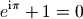
叫做欧拉恒等式，其中e是自然指数的底，i是虚数单位， 是圆周率。此公式被誉为数学最奇妙的公式，它将5个基本数学常数用加法、乘法和幂运算联系起来。下面用SymPy验证一下这个公式。
载入的符号中，E表示自然指数的底，I表示虚数单位，pi表示圆周率，因此上述的公式可以直接如下计算：
>>> E**(I*pi)+1
0
欧拉恒等式可以下面的公式进行计算，
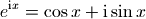
为了用SymPy求证上面的公式，我们需要引入变量x。在SymPy中，数学符号是Symbol类的对象，因此必须先创建之后才能使用：
>>> x = Symbol('x')
expand函数可以将公式展开，我们用它来展开E*(Ipi)试试看：
>>> expand( E**(I*x) )
exp(I*x)
没有成功，只是换了一种写法而已。这里的exp不是math.exp或者numpy.exp，而是sympy.exp，它是一个类，用来表述自然指数函数。
expand函数有关键字参数complex，当它为True时，expand将把公式分为实数和虚数两个部分：
>>> expand(exp(I*x), complex=True)
I*exp(-im(x))*sin(re(x)) + cos(re(x))*exp(-im(x))
这次得到的结果相当复杂，其中sin, cos, re, im都是sympy定义的类，re表示取实数部分，im表示取虚数部分。显然这里的运算将符号x当作复数了。为了指定符号x必须是实数，我们需要如下重新定义符号x：
>>> x = Symbol("x", real=True)
>>> expand(exp(I*x), complex=True)
I*sin(x) + cos(x)
终于得到了我们需要的公式。那么如何证明它呢。我们可以用泰勒多项式展开：
>>> tmp = series(exp(I*x), x, 0, 10)
>>> pprint(tmp)
2 3 4 5 6 7 8 9
x I*x x I*x x I*x x I*x
1 + I*x - -- - ---- + -- + ---- - --- - ---- + ----- + ------ + O(x**10)
2 6 24 120 720 5040 40320 362880
series是泰勒展开函数，pprint将公式用更好看的格式打印出来。下面分别获得tmp的实部和虚部，分别和cos(x)和sin(x)的展开公式进行比较：
>>> pprint(re(tmp)) 2 4 6 8 x x x x 1 + re(O(x**10)) - -- + -- - --- + ----- 2 24 720 40320>>> pprint( series( cos(x), x, 0, 10) ) 2 4 6 8 x x x x 1 - -- + -- - --- + ----- + O(x**10) 2 24 720 40320>>> pprint(im(tmp)) 3 5 7 9 x x x x x + im(O(x**10)) - -- + --- - ---- + ------ 6 120 5040 362880>>> pprint(series(sin(x), x, 0, 10)) 3 5 7 9 x x x x x - -- + --- - ---- + ------ + O(x**10) 6 120 5040 362880
球体体积
在用SciPy数值积分一节我们介绍了如何使用数值定积分计算球体的体积，而SymPy的符号积分函数integrate则可以帮助我们进行符号积分。integrate可以进行不定积分：
>>> integrate(x*sin(x), x)
-x*cos(x) + sin(x)
如果指定x的取值范围的话，integrate则进行定积分运算：
>>> integrate(x*sin(x), (x, 0, 2*pi))
-2*pi
为了计算球体体积，首先让我们来看看如何计算圆形面积，假设圆形的半径为r，则圆上任意一点的Y坐标函数为：
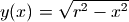
因此我们可以直接对上述函数在-r到r区间上进行积分得到半圆面积，注意这里我们使用symbols函数一次创建多个符号：
>>> x, y, r = symbols('x,y,r')
>>> 2 * integrate(sqrt(r*r-x**2), (x, -r, r))
2*Integral((r**2 - x**2)**(1/2), (x, -r, r))
很遗憾，integrate函数没有计算出结果，而是直接返回了我们输入的算式。这是因为SymPy不知道r是大于0的，如下重新定义r，就可以得到正确答案了：
>>> r = symbols('r', positive=True)
>>> circle_area = 2 * integrate(sqrt(r**2-x**2), (x, -r, r))
>>> circle_area
pi*r**2
接下来对此面积公式进行定积分，就可以得到球体的体积，但是随着X轴坐标的变化，对应的切面的的半径会发生变化，现在假设X轴的坐标为x，球体的半径为r，则x处的切面的半径为可以使用前面的公式y(x)计算出。
球体体积的双重定积分示意图
因此我们需要对circle_area中的变量r进行替代：
>>> circle_area = circle_area.subs(r, sqrt(r**2-x**2))
>>> circle_area
pi*(r**2 - x**2)
用subs进行算式替换
subs函数可以将算式中的符号进行替换，它有3种调用方式：
- expression.subs(x, y) : 将算式中的x替换成y
- expression.subs({x:y,u:v}) : 使用字典进行多次替换
- expression.subs([(x,y),(u,v)]) : 使用列表进行多次替换
请注意多次替换是顺序执行的，因此：
expression.sub([(x,y),(y,x)])
并不能对两个符号x,y进行交换。
然后对circle_area中的变量x在区间-r到r上进行定积分，得到球体的体积公式：
>>> integrate(circle_area, (x, -r, r))
4*pi*r**3/3